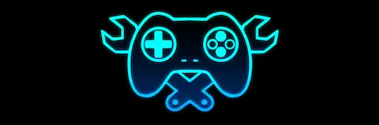

Steam Next Fest October 2026 ha establecido un nuevo récord histórico. Valve confirmó que la cantidad de demos disponibles en esta edición es aproximadamente el doble de la que hubo en la edición anterior de otoño del año pasado. El crecimiento exponencial demuestra la confianza que tienen los desarrolladores independientes en el programa y la efectividad probada de Next Fest para generar visibilidad y presales.
Entre los títulos más descargados y bien recibidos, destaca Haunted Paws — un indie de horror psicológico que ha capturado la imaginación de jugadores con su singular estética y narrativa inquietante. Emberville, un cozy sim con elementos de gestión, también ha sido un fenómeno de descargas. The Wolf Among Us Remastered, el remake del clásico de Telltale y Vertigo Comics, ha generado masivo interés entre fanáticos del punto y click narrativo. Y 1666: Amsterdam, que mezcla horror histórico con investigación sobrenatural, ha resonado con los amantes del mystery indie.
Lo que hace especial a Steam Next Fest es que no incluye únicamente juegos muy pequeños o totalmente desconocidos. El programa acepta tanto proyectos de desarrolladores emergentes como títulos de estudios establecidos que buscan llegar a nuevas audiencias. Esta mezcla crea un ecosistema saludable donde cualquiera puede descubrir su próximo juego favorito de forma completamente gratuita — sin riesgo, sin sorpresas desagradables.
Con la próxima edición de Steam Next Fest programada para febrero de 2027, los desarrolladores ya están preparando sus demostraciones. Cada evento es una oportunidad única para recopilar feedback, generar wishlists y construir comunidad alrededor del juego mucho antes de su lanzamiento oficial. Para jugadores, es simplemente la mejor forma de tener acceso a lo que viene sin desembolsar un euro.